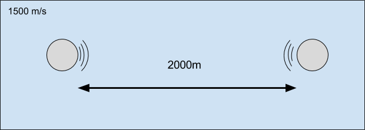

Background
 Acoustics Research Lab, NUS
Acoustics Research Lab, NUS
Background
 Underwater Acoustic Communication
Underwater Acoustic Communication
Introduction
Propagation delay is the amount of time it takes a communication signal to travel from the source to the destination over a given transmission medium.Speeds of Waves
Speed of radio waves in air ~= 299792458 m/s
Speed of sound waves in air ~= 343 m/s
Speed of sound waves in water ~= 1500 m/s
Propagation Time in Water
"one-way trip takes over 1300 ms"